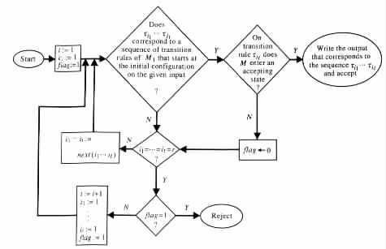
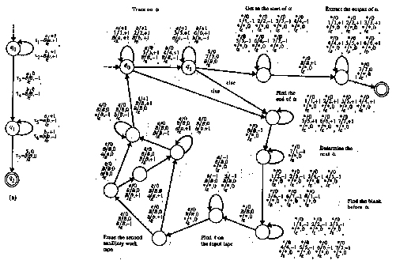
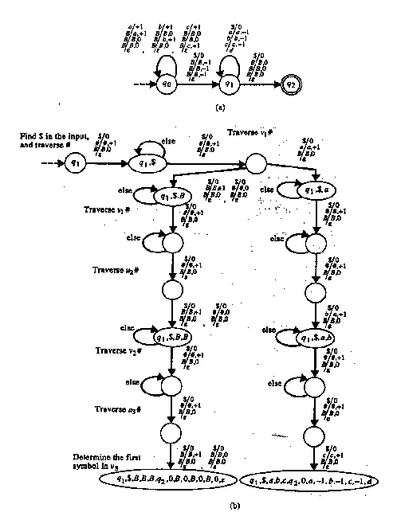

[next] [prev] [prev-tail] [tail] [up]
From Nondeterminism to Determinism
Deterministic Turing Transducers with Two AuxiliaryWork Tapes
Nondeterministic finite-state transducers can compute some functions that no
deterministic finite-state transducer can. Similarly, nondeterministic pushdown automata
can accept some languages that no deterministic pushdown automaton can. However,
every language that is accepted by a nondeterministic finite-state automaton is also
accepted by a deterministic finite-state automaton.
From Nondeterminism to Determinism
The following theorem relates nondeterminism to determinism in Turing
transducers.
Theorem 4.3.1
Every Turing transducer M1 has a corresponding deterministic Turing transducer M2
such that
- M2 accepts the same inputs as M1, that is, L(M2) = L(M1).
- M2 halts on exactly the same inputs as M1.
- M2 has an output y on a given input only if M1 can output y on such an input,
that is, R(M2) Í R(M1).
Proof
Consider any m auxiliary-work-tape Turing transducer M1 and any input x for M1. Let
t1, ¼, tr denote the transition rules of M1. Let Ci1··· it denote the configuration that M1
reaches on input x from its initial configuration, through a sequence of moves that uses the
sequence of transition rules ti1 · · · tit. If no such sequence of moves is possible, then
Ci1··· it is assumed to denote an undefined configuration. The desired Turing transducer
M2 can be a deterministic m + 1 auxiliary-work-tape Turing transducer of the following
form.
M2 on the given input x searches along the sequence Ce, C1, C2, ¼ , Cr, C11,
C12, ¼ , Crr, C111, C112, ¼ , Crrr, ¼ for an accepting configuration of M1 on input
x.
M2 halts in an accepting configuration upon reaching an accepting configuration of
M1. M2 halts in a rejecting configuration upon reaching a t, such that all the
configurations Ci1··· it of M1 are undefined. In an accepting computation, M2 provides
the output associated with the accepting configuration of M1.
A computation of M2 on input x proceeds as follows. M2 lists the strings
a = i1 · · · it in {1, ¼, r}* on its first auxiliary work tape, one at a time, in canonical
order until either of the following two conditions holds (see the flowchart in
Figure 4.3.1).

| Figure 4.3.1 | "Simulation" of a nondeterministic Turing transducer M1 by a deterministic Turing
transducer M2. |
|
- M2 determines a string a = i1 · · · it in {1, ¼, r}*, such that Ci1··· it is an
accepting configuration of M1 on input x. Such a configuration corresponds
to the accepting computation Ce
 Ci1 · · · Ci1··· it of M1 on input x.
In such a case, M2 has the same output as the accepting computation of M1,
and it halts in an accepting configuration.
Ci1 · · · Ci1··· it of M1 on input x.
In such a case, M2 has the same output as the accepting computation of M1,
and it halts in an accepting configuration.
M2 finds out whether a given Ci1··· it is a defined configuration by scanning
over the string i1 · · · it while trying to trace a sequence of moves Ce Ci1
· · · Ci1··· it of M1 on input x. During the tracing M2 ignores the output of
M1.
M2 uses its input head to trace the input head movements of M1. M2 uses
its finite-state control to record the states of M1. M2 uses m of its auxiliary
work tapes to trace the changes in the corresponding auxiliary work tapes of
M1.
M2 determines the output of M1 that corresponds to a given string
i1 · · · it by scanning the string and extracting the output associated with the
corresponding sequence of transition rules ti1 · · · tit.
- M2 determines a t, such that Ci1··· it is an undefined configuration for all the
strings a = i1 · · · it in {1, ¼, r}*. In such a case, M2 halts in a nonaccepting
configuration.
M2 determines that a given string i1 · · · it corresponds to an undefined
configuration Ci1··· it by verifying that M1 has no sequence of moves of the
form Ce Ci1 · · · Ci1··· it on input x. The verification is made by a
tracing similar to the one described in (a).
M2 uses a flag in its finite-state control for determining the existence of a t,
such that Ci1··· it are undefined configurations for all i1 · · · it in {1, ¼, r}*. M2
sets the flag to 1 whenever t is increased by 1. M2 sets the flag to 0 whenever
a string i1 · · · it is determined, such that Ci1··· it is a defined configuration.
M2 determines that the property holds whenever t is to be increased on a flag
that contains the value of 1.
Example 4.3.1
Let M1 be the nondeterministic, one auxiliary-work-tape Turing transducer given in
Figure 4.3.2(a).

| Figure 4.3.2
| (a) A nondeterministic Turing transducer M. (b) A deterministic Turing transducer
that computes the same function as M. (The asterisk * stands for the current symbol
under the corresponding head.) |
|
M1 computes the relation { (wwrev, wrev) | w is in {a, b}+ }. On input abba the Turing transducer
M1 has an accepting computation Ce C1 C12 C124 C1246 C12465 C124657
that corresponds to the sequence of transition rules t1t2t4t6t5t7.
Let M2 be the deterministic Turing transducer in Figure 4.3.2(b). M2 computes
the same function as M1 and is similar to the Turing transducer in the proof of
Theorem 4.3.1. The main difference is that here M2 halts only in its accepting
computations.
On input abba the Turing transducer M2 lists the strings in {1, ¼, 7}* on its first
auxiliary work tape, one at a time, in canonical order. The Turing transducer M2 checks
whether each of those strings a = i1 · · · it defines an accepting computation
Ce Ci1 · · · Ci1··· it of M1.
The Turing transducer M2 detects that none of the strings " ", "1", ¼ , "7",
"1 1", ¼ , "7 7", ¼ , "1 1 1 1 1 1", ¼ , "1 2 4 6 5 6", representing the sequences e, t1, ¼ , t7,
t1t1, ¼ , t7t7, ¼ , t1t1t1t1t1t1, ¼ , t1t2t4t6t5t6, respectively, corresponds to an
accepting computation of M1 on input abba. Then M2 determines that the string
"1 2 4 6 5 7", which represents the sequence t1t2t4t6t5t7, corresponds to an
accepting computation of M1 on input abba. With this determination, the Turing
transducer M2 writes the output of this computation, and halts in an accepting
configuration.
M2 uses the component "Trace on a" to check, by tracing on the given input, that
there exists a sequence of moves of M1 of the form Ce Ci1 · · · Ci1··· it, for
the a = i1 · · · it that is stored in the first auxiliary work tape of M2. Such a
sequence of moves corresponds to an accepting computation of M1 if and only if
tit = t7. The component "Trace on a" is essentially M1 modified to follow the
sequence of transition rules dictated by the content of the first auxiliary work tape of
M2.
M2 uses the components "Find the end of a," "Determine the next a," "Find the blank
before a," "Find ¢ on the input tape," and "Erase the second auxiliary work tape" to prepare
itself for the consideration of the next a from the canonically ordered set {1, ¼, 7}*.
Deterministic Turing Transducers with Two Auxiliary
Work Tapes
The following proposition implies that Theorem 4.3.1 also holds when M2 is a
deterministic, two auxiliary-work-tape Turing transducer.
Proposition 4.3.1
Each deterministic Turing transducer M1 has an equivalent deterministic Turing
transducer M2 with two auxiliary work tapes.
Proof
Consider any deterministic, m auxiliary-work-tape Turing transducer M1. On a given
input x, the Turing transducer M2 simulates the computation C0 C1 C2 · · · that
M1 has on input x.
M2 starts by recording the initial configuration C0 = (¢q0x$, q0, ¼, q0, e) of M1 on
input x. Then M2 repeatedly replaces the recorded configuration Ci of M1, with the next
configuration Ci+1 of the simulated computation.
M2 halts upon reaching a halting configuration of M1. M2 halts in an accepting
configuration if and only if it determines that M1 does so.
M2 records a configuration Ci = (uqv, u1qv1, ¼, umqvm, w) of M1 in the following
manner. The state q is stored in the finite-state control of M2. The input head location of
M1 is recorded by the location of the input head of M2. The output w of M1 is
recorded on the output tape of M2. The tuple (u1, v1, ¼, um, vm) is stored as a
string of the form #u1#v1# · · · #um#vm# on an auxiliary work tape of M2,
where # is assumed to be a new symbol. The tuple is stored on the first auxiliary
work tape of M2 when i is even and on the second auxiliary work tape when i is
odd.
The Turing transducer M2 starts a computation by laying a string of (2m + 1)
symbols # in the first auxiliary work tape. Such a string represents the situation
in which u1 = v1 = · · · = um = vm = e. M2 determines the transition rule
(q, a, b1, b2, ¼, bm, p, d0, c1, d1, c2, d2, ¼, cm, dm, r) to be used in a given move by getting q
from the finite-state control, a from the input tape, and b1, ¼ , bm from the auxiliary work
tape that records #u1#v1# · · · #um#vm#.
Example 4.3.2
Let M1 be the Turing transducer whose transition diagram is given in Figure 4.3.3(a).

| Figure 4.3.3
| The segment of the Turing transducer in part (b) determines the transition rule used
by the Turing transducer in part (a) from state q1. |
|
The Turing transducer M2 in the proof of Proposition 4.3.1 can use a segment D as in
Figure 4.3.3(b) to determine the transition rule that M1 uses on moving from state
q1.
D assumes that M1 is in configuration (uq1v, u1q1v1, ¼, umq1vm, w), that M2 is in
state q1, that #u1#v1# · · · #um#vm# is stored on the first auxiliary work tape of M2,
and that the head of the first auxiliary work tape is placed on the first symbol of
#u1#v1# · · · #um#vm#.
Since Turing transducers can compute relations that are not functions, it follows that
nondeterministic Turing transducers have more definition power than deterministic Turing
transducers. However, Theorem 4.3.1 implies that such is not the case for Turing
machines. In fact, Theorem 4.3.1 together with Proposition 4.3.1 imply the following
corollary.
Corollary 4.3.1
A function is computable (or, respectively, partially computable) by a Turing transducer if
and only if it is computable (or, respectively, partially computable) by a deterministic, two
auxiliary-work-tape Turing transducer.
[next] [prev] [prev-tail] [front] [up]